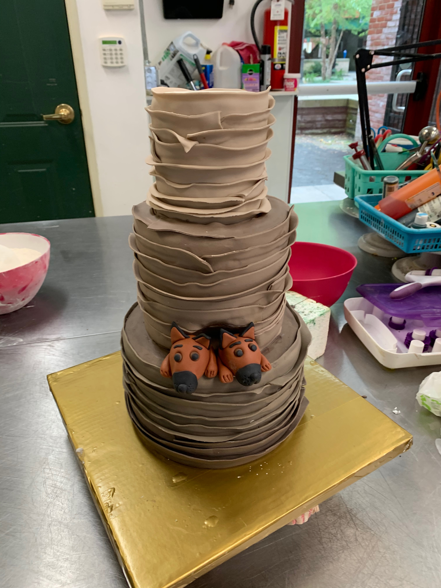
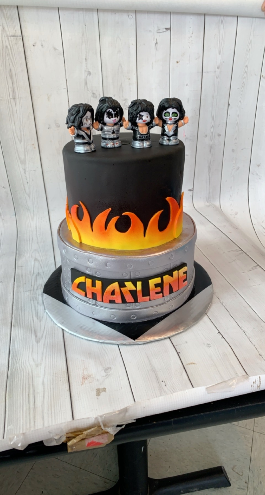

Work Experience:
I started working at a local gourmet cupcake and wedding cake bakery the summer after I finished middle school. It was my dream first job and
I have now worked there for the last five summers! I am now an assistant baker and do everything from mixing batters to decorating three tiered
wedding cakes. My specialty is decorating cakes and cupcake cakes, but we also produce hundreds of custom cookies every week
to distribute. I am also trained in modeling realistic cakes with Rice Krispie treats, modeling chocolate, and fondant. This
technique is something I used to watch on shows like Cake Wars, so it was a great opportunity to be professionally trained myself.


Favorite Things:
My favorite on campus activity is to hammock by Lake Marynell and Lake Verona. I love being creative and making multimedia art,
but my favorite is painting. In the beginning of the pandemic I even started to paint my bedroom walls with paintings and now that is one of
my favorite activities. I enjoy working out and swimming when I am not dance training. In my free time I enjoy watching my favorite films as well as rating
new ones. My favorite color is pink and my favorite foods are sushi and icecream.